NL82-SNN-4
16
NL82-SNN-4
16
Volvo S60
1.6 T4 Kinetic 180 pk
2011
249.937 km
Handgeschakeld
180 pk
Incl. APK en afleverbeurt€ 5.900
Bekijk
Alle auto's op voorraad
Elke auto hieronder staat nu in onze showroom in Maaspoort. Prijzen zijn inclusief nieuwe APK en afleverbeurt; garantie tot 24 maanden mogelijk.
NL82-SNN-4
16
1.6 T4 Kinetic 180 pk
 NL3-SLN-35
15
NL3-SLN-35
15
180 Ambition nl-auto
 NLGN-705-P
20
NLGN-705-P
20
2.0 Executive Business 4WD nl-auto
 NL90-SHD-9
26
NL90-SHD-9
26
1.4 TSI Highline automaat nl-auto panorama dak
 NL51-KFP-4
12
NL51-KFP-4
12
1.25 Limited 5 drs nw apk
 NL59-XH-RJ
13
NL59-XH-RJ
13
1.8-16V Ghia nw apk
 NL10-PLJ-9
17
NL10-PLJ-9
17
523i High Executive sedan 1 eigenaar
 NL1-XTF-79
21
NL1-XTF-79
21
1.0 move up! automaat 5 deurs nl-auto! 91 dkm airco cruise c
 NL74-ZSH-6
18
NL74-ZSH-6
18
1.6 EcoBoost Titanium airco ecc
 NL97-XLS-8
17
NL97-XLS-8
17
320i Executive sedan nl-auto 19 inch lmv nette auto!
 NL86-XBX-7
16
NL86-XBX-7
16
Sportback 1.4 TFSI Ambition Pro Line S 5 deurs s-line
 NL2-TDG-41
13
NL2-TDG-41
13
1.0i i-Motion Comfort Plus rijbare schroef schade! airbags e
 NL39-NVT-1
14
NL39-NVT-1
14
1.0-12V Millesim 200 5 drs
 NL64-XNN-3
12
NL64-XNN-3
12
1.2 Base 3 drs nw apk lmv
 NL4-XJB-51
15
NL4-XJB-51
15
1.6 GDi Business Pack nl-auto
 NL03-SFF-2
14
NL03-SFF-2
14
1.0-12V Now nw apk! 5 drs
 NL7-XFJ-49
16
NL7-XFJ-49
16
1.4 CVVT ExecutiveLine airco
 NL7-XGB-87
19
NL7-XGB-87
19
Touring 528i Luxury Edition nl-auto leder full map 19 inch t
 NL6-XGN-78
15
NL6-XGN-78
15
1.2 Bandit EASSS 5 deurs
 NL36-RXT-6
15
NL36-RXT-6
15
1.8 VVTi Business portier schade
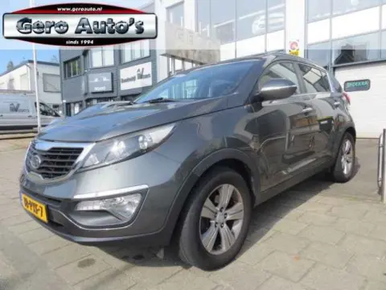
NL18-PXF-7 141.6 GDI X-ecutive Plus Pack
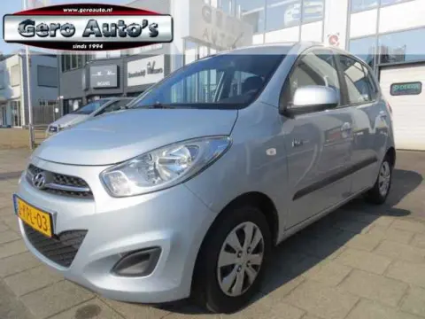
NL2-KPL-03 141.0 i-Drive Cool 5 deurs
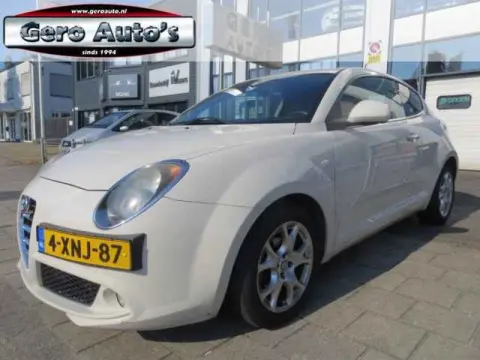
NL4-XNJ-87 140.9 TwinAir Esclusivo hele nette alfa
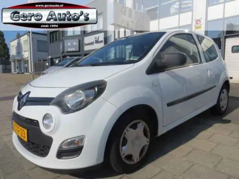
NL8-STF-23 131.2 16V Parisienne airco elec ramen cr control
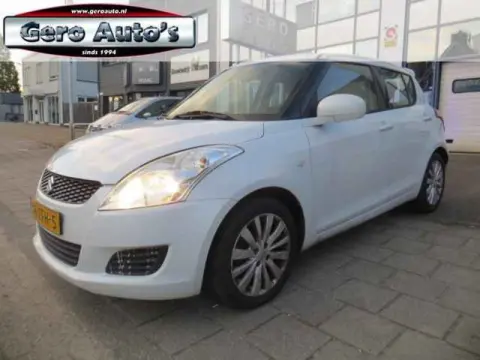
NL96-ZFH-5 141.2 Bandit EASSS cruise control airco 5 drs
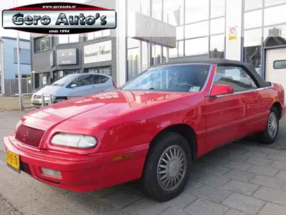
NLSP-BT-74 173.0i V6 le baron gtc cabrio automaat
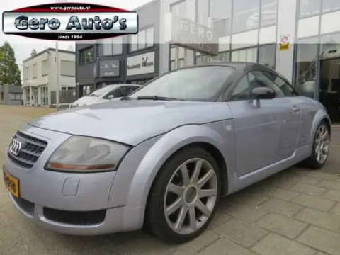
NL66-RJ-FB 191.8 5V Turbo nl-auto
 NLKF-807-K
14
NLKF-807-K
14
1.4 Edition 5 drs nl auto
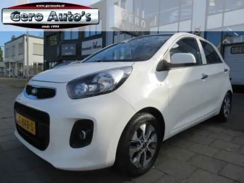
NLJT-848-S 151.0 CVVT ComfortPlusLine Navigator vol extra`s airco ecc
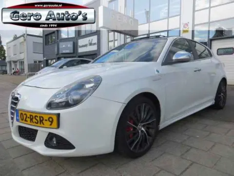
NL02-RSR-9 181.7 TBi Quadrifoglio Verde echt iets aparts
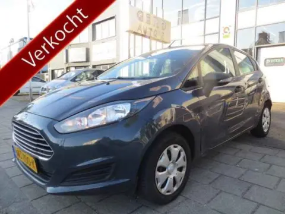
NLNS-700-K 171.25 Titanium 5 deurs let op rijdbare schade! zie foto`s
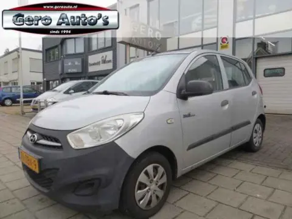
NL76-ZBN-9 131.0 Pure elec ramen stbkr
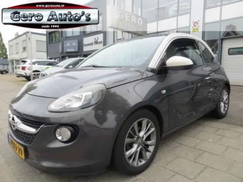
NL3-KXJ-29 181.4 Glam nl-auto! panorama
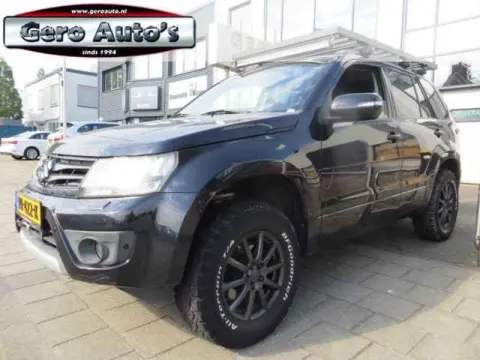
NLRV-422-K 152.4 4WD Exclusive imperial
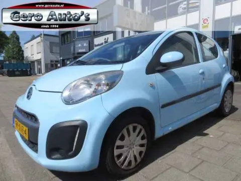
NL97-XVZ-4 141.0 Collection 5 deurs airco
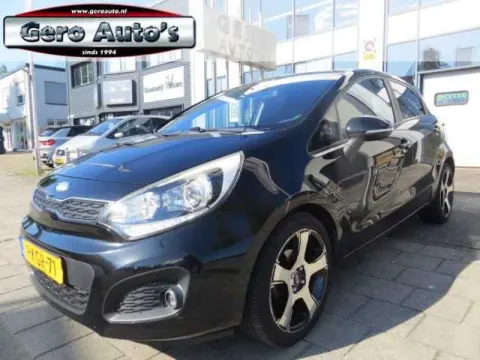
NL1-KGR-71 151.2 CVVT Plus Pack airco
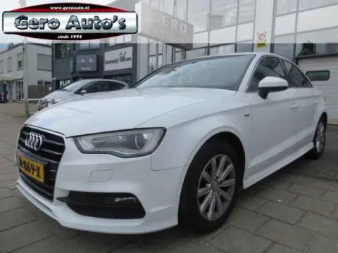
NLJR-869-X 19Limousine 1.4 TFSI CoD ultra 150 pk sport sedan s-line nl au
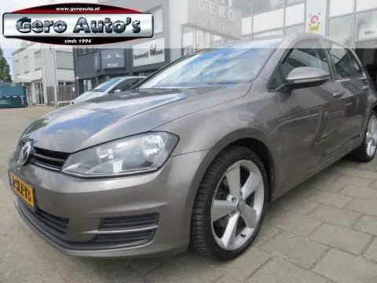
NL2-SLZ-73 151.2 TSI Trendline 5 drs
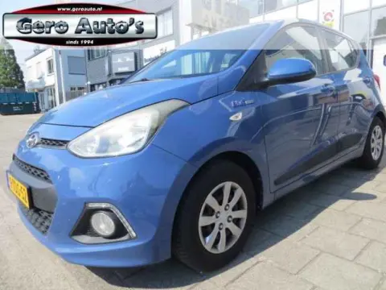
NL9-TDS-52 161.0i i-Motion Comfort Plus nl-auto airco ecc 5 deurs nw mode
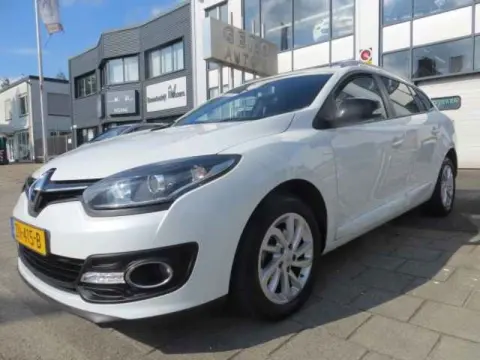
NLZN-415-B 19Estate 1.2 TCe Limited vol opties
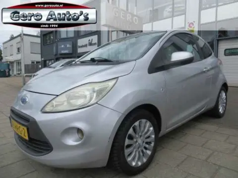
NL18-HRG-2 131.2 Titanium airco nw apk
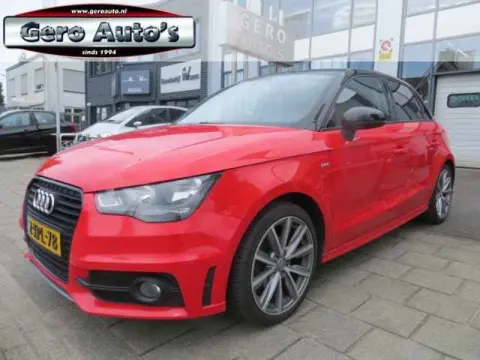
NL2-XPL-78 16Sportback 1.2 TFSI Admired s-line 5 drs
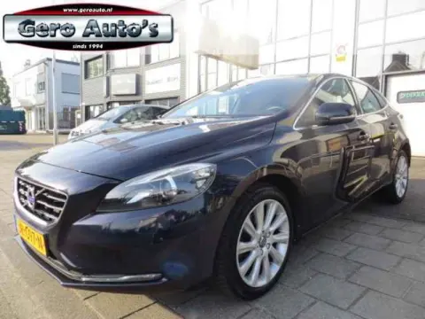
NLJR-097-N 172.0 T3 Momentum half leder
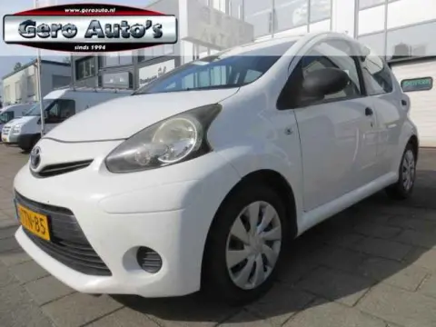
NL2-TTN-85 131.0 VVT-i Comfort 5 deurs
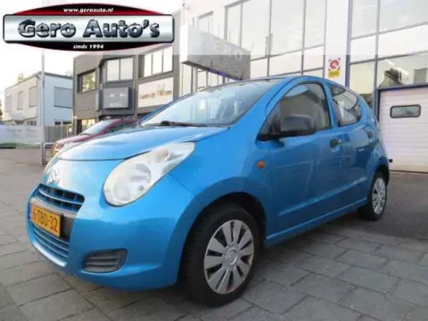
NL6-TBD-32 131.0 Comfort EASSS nl-auto nw koppeling! airco elec pakket
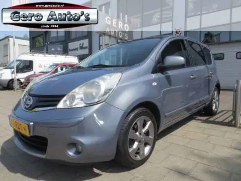
NL63-RDS-4 171.4 Connect Edition hoge instap! airco ecc lmv
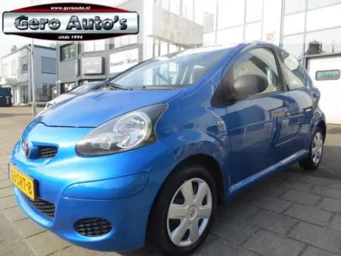
NL63-SRT-8 151.0-12V Now nw apk 5 drs 4x nw banden
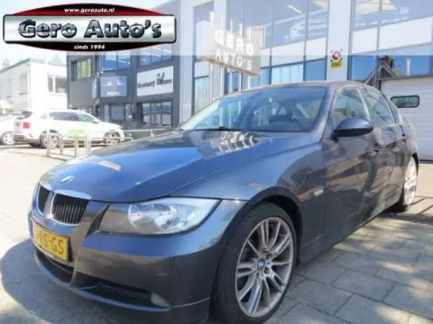
NL23-RS-GS 13320i Dynamic Executive export of handel!
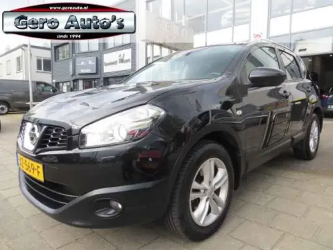
NLXZ-569-F 231.6 Connect Edition panorama
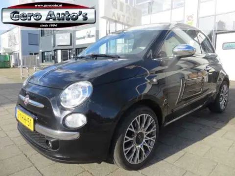
NL2-KHH-51 14By gucci 0.9 TwinAir Lounge cabriodak! vol leder xenon airco
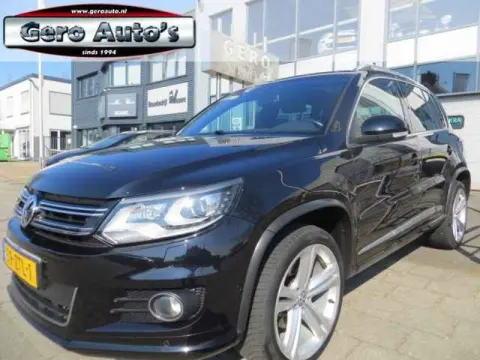
NL59-ZTL-1 211.4 TSI Sport&Style R-line Edition panorama airco ecc nl-aut
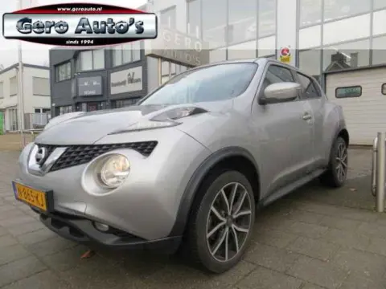
NLN-865-KJ 171.6 Connect Edition automaat
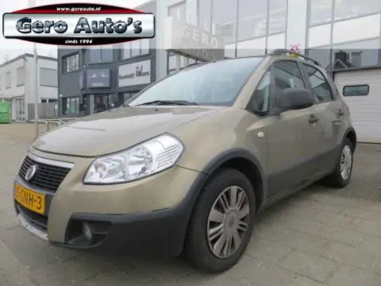
NL05-GNH-3 141.6-16V Dynamic lichte rijdbare schade
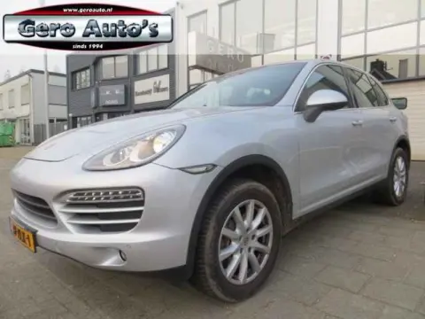
NL37-ZLK-1 173.6 nl-auto vol opties panorama
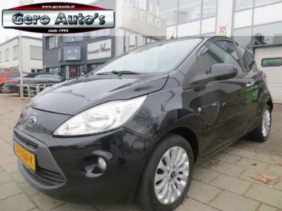
NLXV-084-K 131.2 Comfort start/stop nw apk lmv airco elek ramen
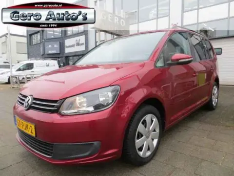
NL67-PJK-2 161.4 TSI Comfortline nl-auto airco ecc
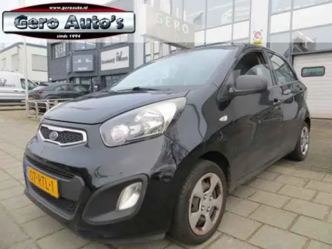
NL07-RTL-1 131.0 CVVT Airco 5 deurs
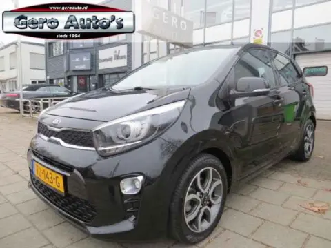
NLTD-143-G 161.0 CVVT DynamicPlusLine 5 deurs
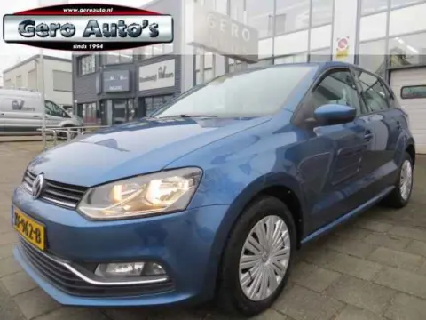
NLKF-962-B 171.0 Comfortline Edition 5 deurs airco elec ramen keurig onde
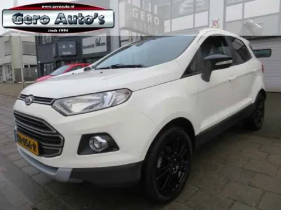
NLKB-056-R 151.0 EcoBoost Titanium nl-auto
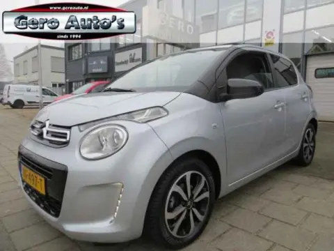
NLRF-497-T 171.0 VTi Airscape Shine 4 deurs open cabrio dak
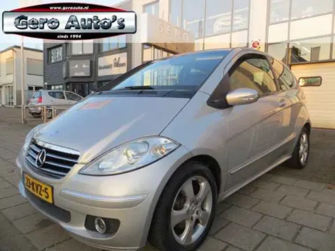
NL23-KVZ-5 13200 Classic nw model export of handel koppeling slecht
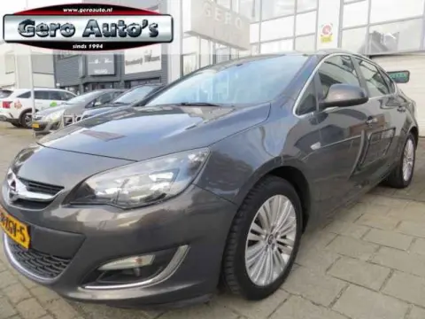
NL38-ZGV-5 171.4 Turbo Cosmo sedan nl auto veel opties
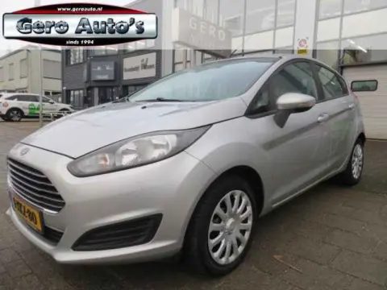
NL1-XKZ-80 141.25 Titanium nw type 5 drs airco lmv etc
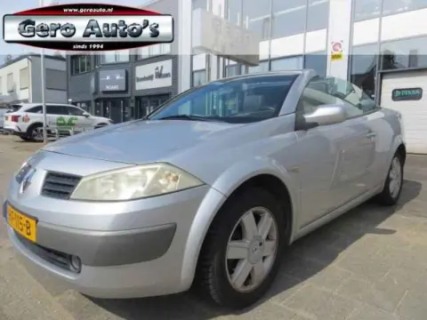
NLHF-115-B 141.6-16V Privilège Luxe inruilkoopje cabrio rijden voor een s
 NLSJ-119-Z
15
NLSJ-119-Z
15
1.0 ecoFLEX Cosmo airco ecc
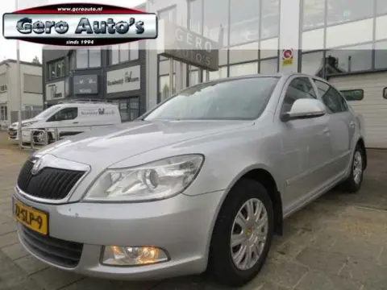
NL22-SLP-9 131.2 TSI Ambition 5 deurs hatcback nl auto
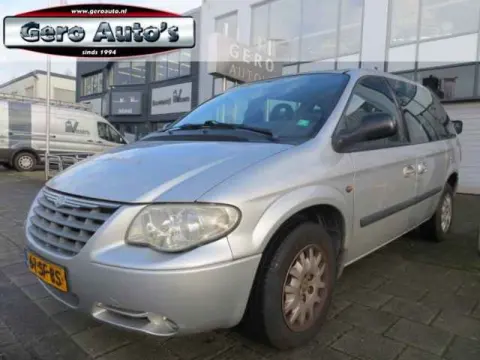
NL62-SF-BS 153.3i V6 SE Luxe automaat 6 persoons
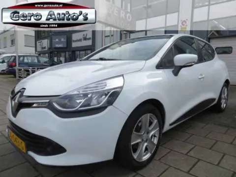
NLJG-043-G 131.2 Expression 5 deurs automaat automaat airco cruise contro
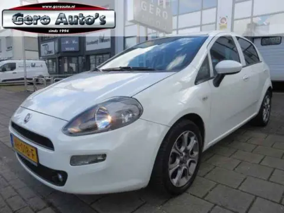
NLNH-018-F 170.9 TwinAir Lounge 1eigenaar 5 deurs
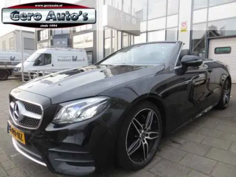
NLH-719-HZ 27Cabrio 200 25th Anniversary Edition AMG pakket AMG widescree
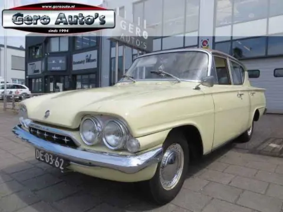
NLDE-03-62 15Zeer mooie oldtimer vaste prijs
Zet een filter uit, of bel ons: we zoeken gericht voor je in onze inkoopkanalen.
Bel 06 53 67 89 01Maaspoort, 's-Hertogenbosch
Wij kopen in via leasemaatschappijen, dealers en particulieren. Vertel ons wat je zoekt, dan zoeken we mee.
Buiten deze tijden op afspraak, ook 's avonds en op zondag.